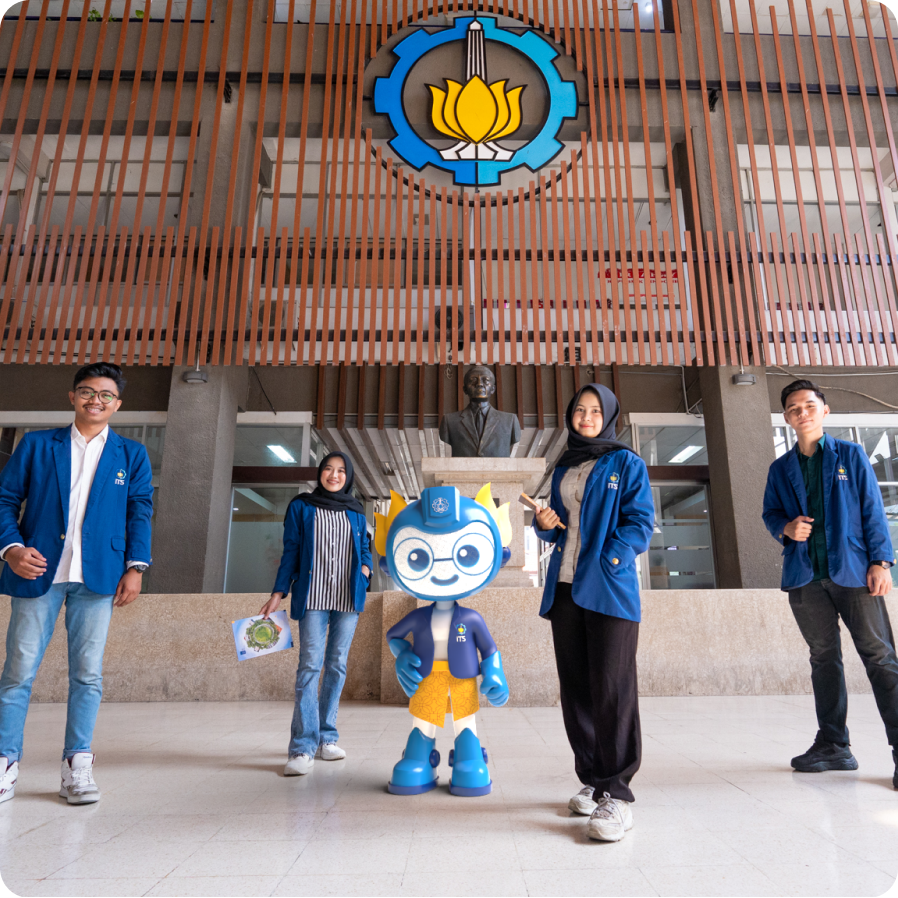
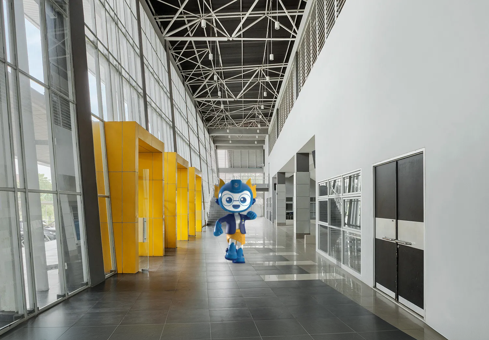
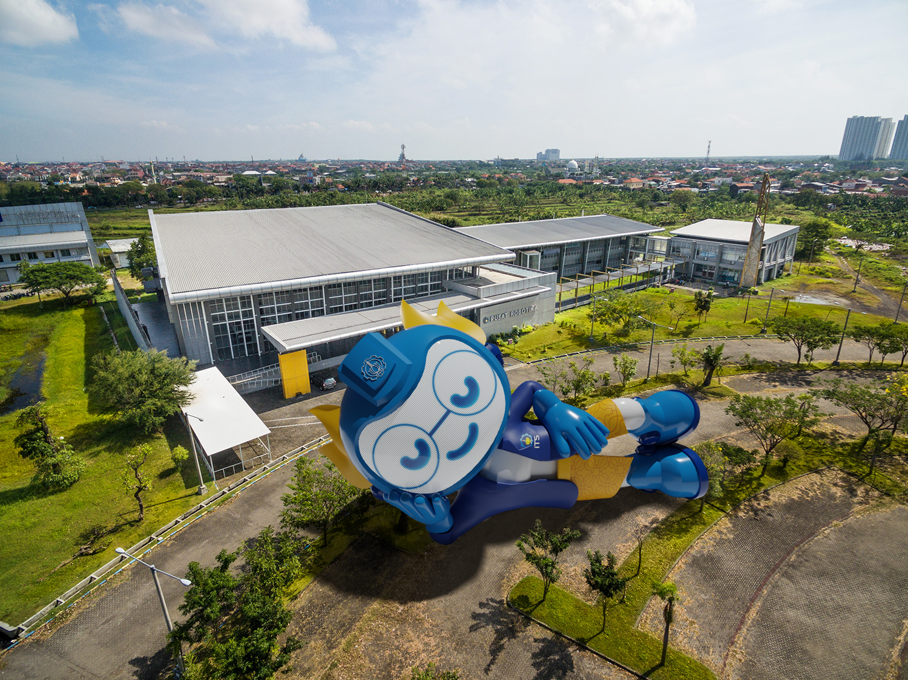

{ HERO }
Advancing
Humanity
One Step at a Time*
I’m SENO. Official face of ITS, unofficial campus celebrity. I make tech look friendly so people actually listen.


{ CTA }
Been There
Done That
Hallways. Photo ops. Launch days. I’ve done the rounds. If you’ve been on campus, we’ve probably already met.
My Work
{ PORTO }
Posters. Socials. Magazines. Campaigns. Same face, different gigs. I get around. That’s the point.

{ CTA }
Work With
Me!
Need a mascot who already knows the campus and the camera? Yeah. You want me.